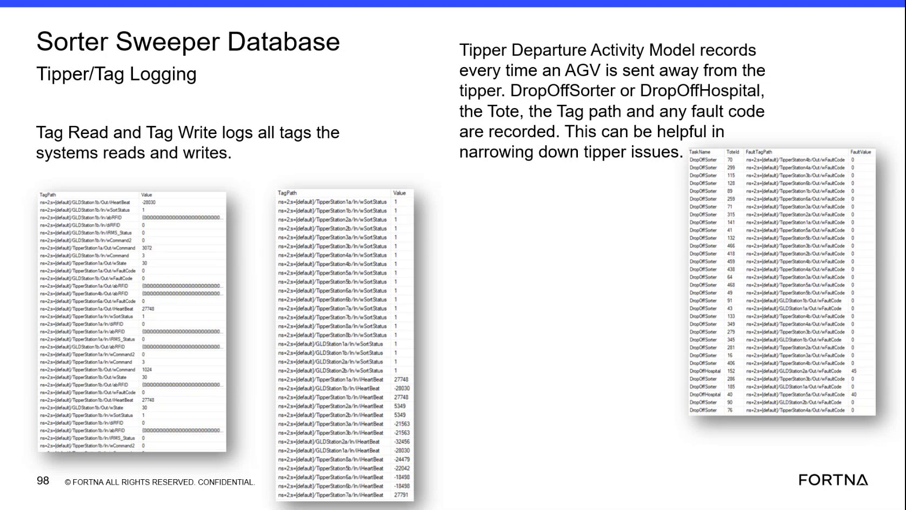

| Procedure ID | proc_diagnose_tipper_issues_ssms_tipper_departure_tag_logs_v1 |
|---|---|
| Title | Diagnose Tipper Issues in SSMS Using Sorter Sweeper Database Tipper Departure and Tag Logs |
| Procedure Type | diagnostic |
| Primary Role | L2_support |
| Support Safe | Yes |
| Capability Tags | tipper_station_fault |
| Access Surface | wcs_sql |
| Audience Roles | L2_support, L3_support |
| Failure Pattern Tags | tipper_fault |
| Validation Status | needs_sme_review |
| Merge Status | source_finalized |
Use read-only SSMS access to the WCS / Helix Sorter Sweeper Database to inspect Tipper Departure Activity Model records and Tag Read/Tag Write log values associated with an AGV departure. Review the departure destination, tote identifier, fault information, tag path, and recorded value to narrow down a tipper issue without inferring undocumented fault-code meanings or corrective actions.
Use this SSMS / WCS / Helix DB diagnostic when investigating a tipper issue and a corresponding AGV departure from a tipper, DropOffSorter, or DropOffHospital needs to be checked in the Sorter Sweeper Database.

Responsible role: L2_support
Instruction:
In SSMS on the WCS / Helix DB surface, open the Sorter Sweeper Database and locate the Tipper Departure Activity Model records and the Tag Read and Tag Write log view or model. Use the available record display without modifying data.
Expected result:
The live SSMS display exposes Tipper Departure Activity Model records and Tag Read/Tag Write entries with recorded tag paths and values.
Stop or Escalate If:
Responsible role: L2_support
Instruction:
In the SSMS Tipper Departure Activity Model records, review the entries for the relevant AGV departure from a tipper, DropOffSorter, or DropOffHospital.
Expected result:
A departure record is identified for the relevant tipper, DropOffSorter, or DropOffHospital event.
Stop or Escalate If:
Responsible role: L2_support
Instruction:
In the live SSMS record display, inspect the Task Name, ToteId, Fault or fault-code field, TagPath, and Value fields for the relevant departure and associated Tag Read/Tag Write entries.
Expected result:
The record display provides the Task Name, ToteId, Fault or fault-code information, TagPath, and Value associated with the departure or tag log entry.
Stop or Escalate If:
Responsible role: L2_support
Instruction:
In SSMS, compare the TagPath and Value from the Tag Read/Tag Write entries with the relevant Tipper Departure Activity Model record, including its Task Name, ToteId, departure destination, and Fault or fault-code information. Treat the displayed values as recorded data; do not assign an undocumented meaning to a fault code.
Expected result:
The tag path and value can be associated with the relevant departure record, or the record shows that the event cannot be correlated.
Stop or Escalate If: